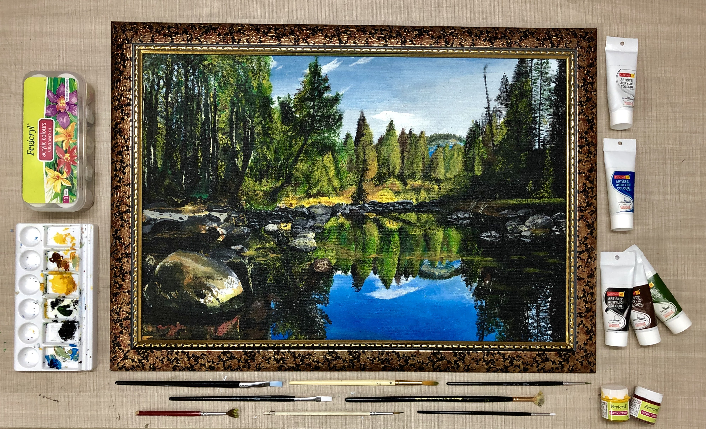
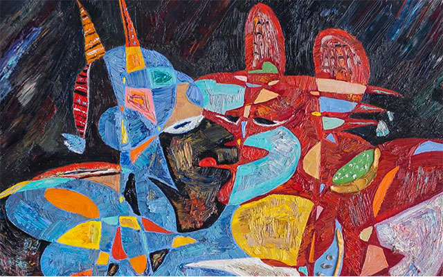
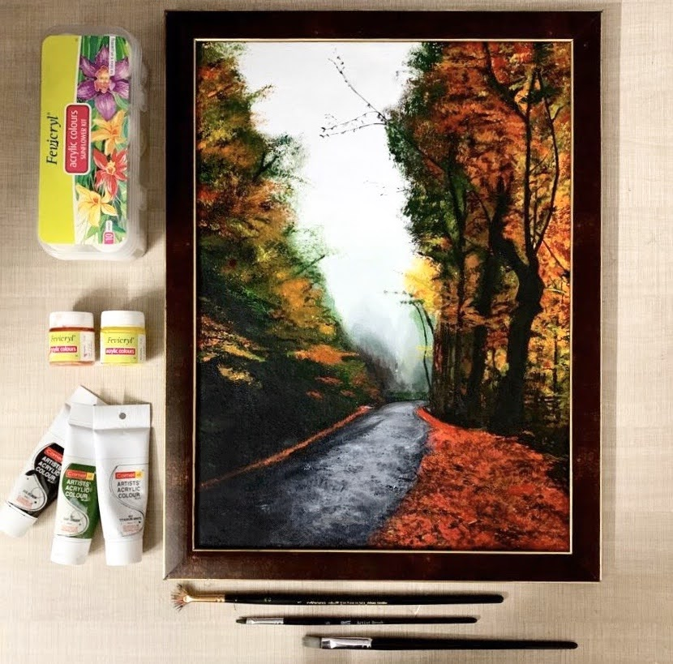
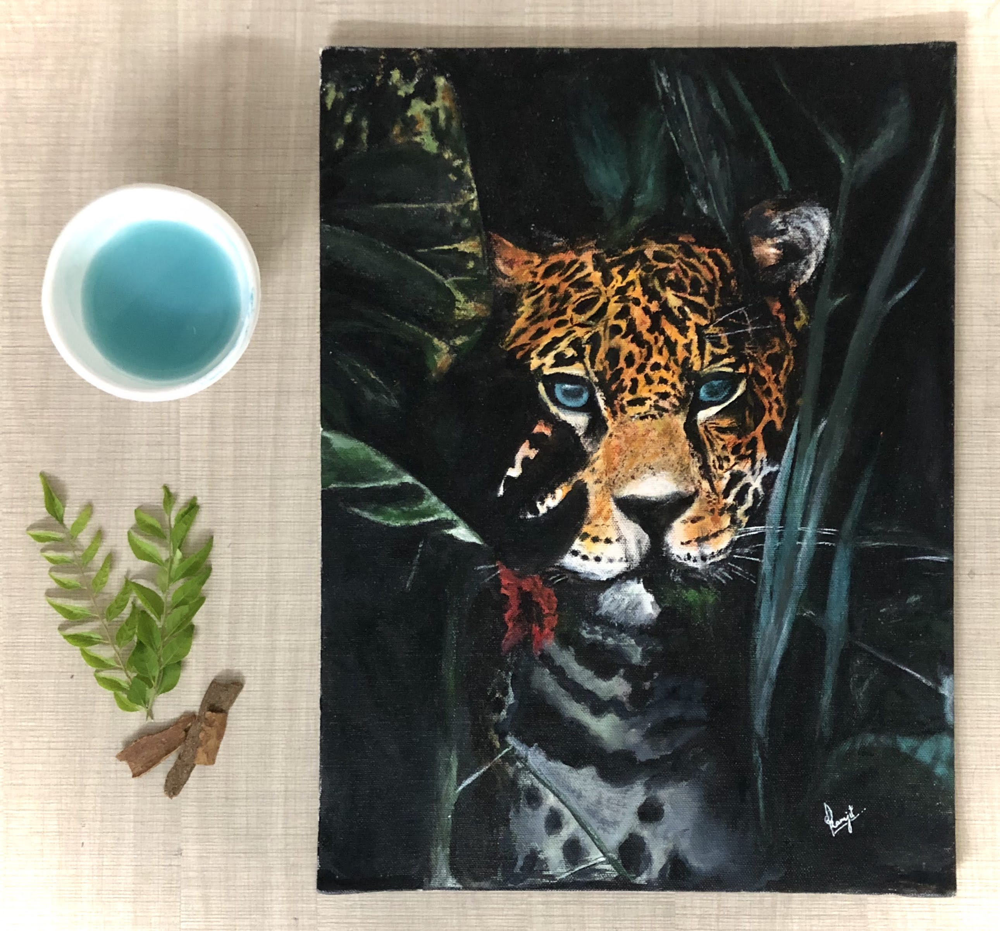
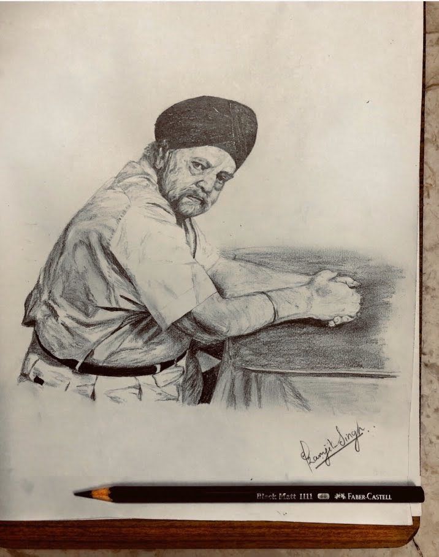

I have been keenly interested in art and craft since my school days. Starting with crayons and oilpastels to soft pastels, acrylics and water colors, I ahve explored most of the mediums and recently triend my hands on portrait sketching. Many of my works have been put up in exhibitions and even got selected in some prominent competitions. Have a quick tour of my art gallery!
Hands on Acrylics

Landscape
This was the first time when I picked up a canvas and being just five days into it, I realised that I am not going to make it to the end. But since it was that after-boards free time, slowly and steadily after 3 months I made my final stroke. The piece came out to br a beautiful one and the journey that went into it was even more amazing.
Fun Fact:Out of three months period of completion, 20 days went into getting that front stone right.
The artwork secured first position in Greenthusiast World environment day competition, got displayed in Estacy exhibition(2k19 MJKPS) and was featured in Sterling 2k19(Annual magazine MJKPS).

Abstract
This piece was my first try on acrylics and is a replica of an abstract art piece made by Wassily Kandinsky.
Misty Road
I took up this artpiece after my first semester end-sem examinations just to take some time out of studies. It took a time span of 4-5 weeks and wet road depiction was the major part.


The Camouflaged Beast
This is my most recent acrylics in canvas art piece which I started during the pandemic phase. It completed within 2 weeks of time and secured first position in GreenThusiast Foundation's art and photography competition organised on the occasion of World Wildlife Day.
Portaits

Sketch 1
First try at portrait sketching and I took my grandfather's pic to try my hands on and it actually turned out to be much better than I excpected in the first attempt itself.
Sketch 2
I made this one as a gift for my maternal grandpa on his 75th birthday.
Fun Fact : Although this piece was completed in just 45 minutes but a major part went into making the beard look realistic and flowy.